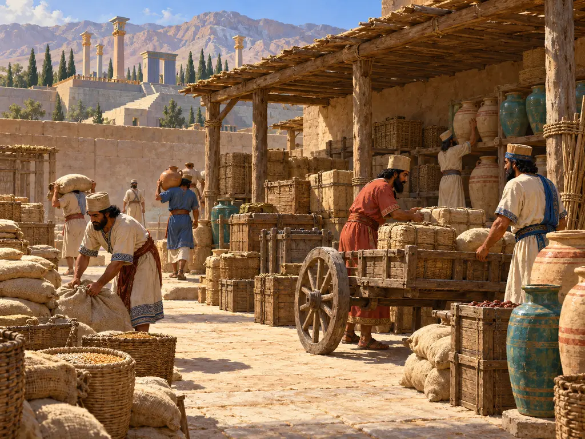
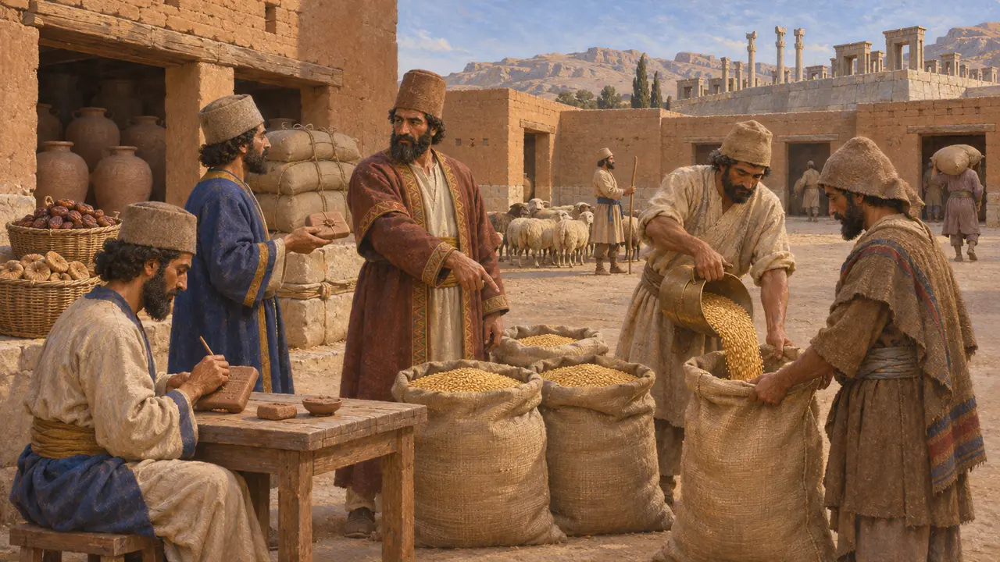
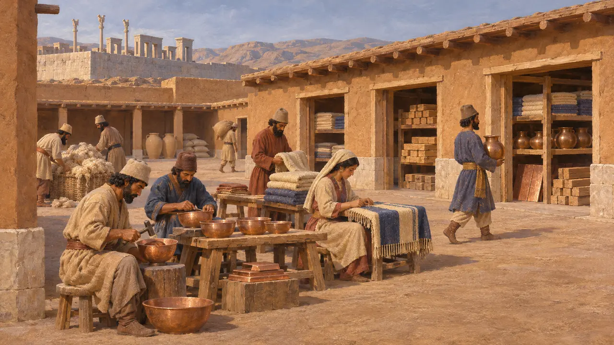
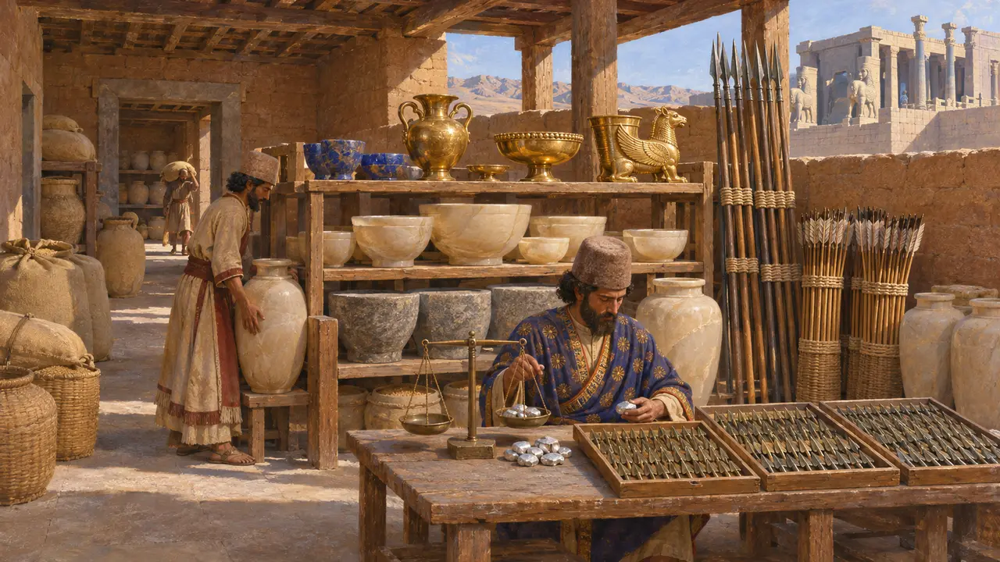
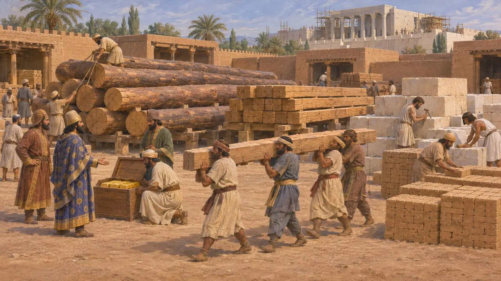
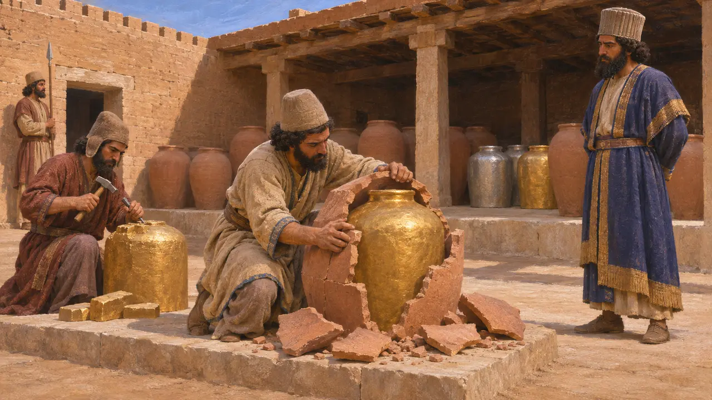

Lagerhof
Königliche Lager für Baustoffe und Güter im Perserreich, um 530-479 v. Chr.
Die persischen Könige führten eine Vorratswirtschaft. Getreide, Wein, Bauholz, Stein, Tuch und Waffen wurden von Beamten entgegengenommen, gezählt, verwahrt und ausgegeben, die jede Bewegung schriftlich festhielten. Diese Vorräte ernährten Arbeiter, belieferten Baustellen und bewaffneten Truppen, und die erhaltenen Aufzeichnungen aus Persepolis zeigen, wie genau das System verwaltet wurde.
Im Spiel: Der Lagerhof bewahrt Bauholz, Ton, Töpferwaren, Kalkstein, Waffen, Wolle, Tuch und Wein gemeinsam auf, mit Obergrenzen für Massengüter, damit Platz für Töpferwaren, Tuch und Wein bleibt. Echte persische Vorräte waren auf viele Ämter und Orte verteilt.

Zählung ein- und ausgehender Waren
Zeitgenössisch belegtDie Festungstäfelchen von Persepolis wurden zwischen etwa 509 und 493 überwiegend in elamischer Sprache geschrieben. Sie verzeichnen Güter, die in der ganzen Persis eingelagert und ausgegeben wurden. Namentlich genannte Lieferanten verwahrten Getreide, Wein, Bier, Obst und Vieh an vielen örtlichen Plätzen und gaben sie auf gesiegelte Anweisung hin heraus. Jede Übergabe wurde vermerkt, sodass der Bestand mit dem abgeglichen werden konnte, was als Rationen oder Reiseproviant hinausgegangen war.
R. Hallock, Persepolis Fortification Tablets, 1969

Lagerhäuser, die zugleich Werkstätten waren
UmstrittenDie Täfelchen verwenden das elamische Wort kapnuški, meist mit Schatzhaus übersetzt, für Einrichtungen in Persepolis, Schiras und anderen Orten. Manche verwahrten Wertgegenstände und Materialien, andere beschäftigten Gruppen von Arbeitern, die Waren herstellten. Historiker streiten bis heute darüber, inwieweit es sich um Lagerhäuser, Werkstätten oder beides zugleich handelte und wie sie mit den Getreide- und Weinvorräten zusammenhingen.
P. Briant, From Cyrus to Alexander, 2002

Das Schatzhaus von Persepolis
Zeitgenössisch belegtDie Ausgräber des Schatzhauses auf der Terrasse von Persepolis fanden Lagerräume, in denen Steingefäße aufbewahrt worden waren – Gegenstände, die wohl als Geschenke oder Tribut gebracht wurden –, sowie große Mengen an Waffen, darunter Tausende von Pfeilspitzen. Das meiste Erhaltene spiegelt den Zustand des Gebäudes wider, in dem Alexander es 330 zurückließ. Eine eigene Gruppe von Tafeln, die dort gefunden wurde und aus der Zeit von 492 bis in die 450er-Jahre stammt, verzeichnet Silber, das an Arbeiter bei königlichen Bauvorhaben ausgezahlt wurde, teils anstelle von Naturalrationen.
E. Schmidt, Persepolis II, 1957; G. Cameron, Persepolis Treasury Tablets, 1948

Baustoffe aus der Ferne
Zeitgenössisch belegtDie Gründungsurkunde des Dareios aus Susa verzeichnet die Herkunft seiner Baustoffe. Sie nennt Zedernholz vom Libanon, weiteres Bauholz aus Gandara und Karmanien, Gold aus Sardes und Baktrien sowie Stein und Ziegel, die von Völkern aus dem ganzen Reich bearbeitet wurden. Baustoffe in diesem Umfang mussten gesammelt und auf der Baustelle gelagert werden, bis die Handwerker sie brauchten.
DSf

Der Schatz des Königs in Krügen
Antiker BerichtHerodot berichtet, dass der König den empfangenen Tribut aufbewahrte, indem er das Metall schmelzen und in Tongefäße gießen ließ. Sobald es erstarrt war, schlug man den Ton ab und schnitt bei Bedarf Stücke aus dem festen Block. Die Geschichte mag vereinfacht sein, doch sie spiegelt die griechische Vorstellung von persischem Reichtum wider, der eher gehortet als sogleich ausgegeben wurde.
Herodotus 3.96
Quellen
- R. Hallock, Persepolis Fortification Tablets, 1969
- E. Schmidt, Persepolis II, 1957
- G. Cameron, Persepolis Treasury Tablets, 1948
- DSf
- Herodotus 3.96
- P. Briant, From Cyrus to Alexander, 2002